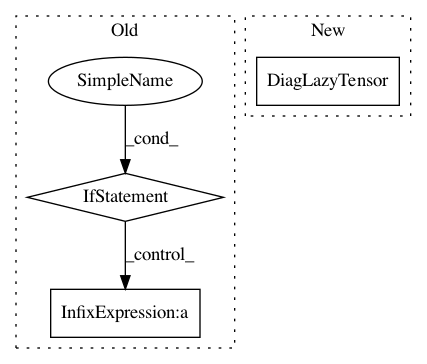

44826d877d755e7df1d681d680583911d6d2032e,gpytorch/variational/whitened_variational_strategy.py,WhitenedVariationalStrategy,forward,#WhitenedVariationalStrategy#Any#,67
Before Change
induc_data_covar.transpose(-1, -2), predictive_covar @ induc_data_covar
)
if beta_features.diagonal_correction.on():
diag_correction = (data_data_covar.diag() - interp_data_data_var).clamp(0, math.inf)
predictive_covar = DiagLazyTensor(predictive_covar.diag() + diag_correction)
// Save the logdet, mean_diff_inv_quad, prior distribution for the ELBO
if self.training:
self._memoize_cache["prior_distribution_memo"] = MultivariateNormal(induc_mean, induc_induc_covar)
self._memoize_cache["logdet_memo"] = -logdet
self._memoize_cache["mean_diff_inv_quad_memo"] = mean_diff_inv_quad
After Change
)
if self.training:
data_covariance = DiagLazyTensor((data_data_covar.diag() - interp_data_data_var).clamp(0, math.inf))
else:
neg_induc_data_data_covar = induc_induc_covar.inv_matmul(
induc_data_covar, left_tensor=induc_data_covar.transpose(-1, -2).mul(-1)
)
In pattern: SUPERPATTERN
Frequency: 4
Non-data size: 3
Instances
Project Name: cornellius-gp/gpytorch
Commit Name: 44826d877d755e7df1d681d680583911d6d2032e
Time: 2019-04-15
Author: balandat@fb.com
File Name: gpytorch/variational/whitened_variational_strategy.py
Class Name: WhitenedVariationalStrategy
Method Name: forward
Project Name: cornellius-gp/gpytorch
Commit Name: 9233f51a05def9f3b2106231f7089295fb205ddc
Time: 2019-04-15
Author: gpleiss@gmail.com
File Name: gpytorch/variational/whitened_variational_strategy.py
Class Name: WhitenedVariationalStrategy
Method Name: forward
Project Name: cornellius-gp/gpytorch
Commit Name: 198493be78000034e4ce36d846bda0a82fd0779f
Time: 2021-01-16
Author: balandat@fb.com
File Name: gpytorch/lazy/diag_lazy_tensor.py
Class Name: DiagLazyTensor
Method Name: _mul_matrix
Project Name: cornellius-gp/gpytorch
Commit Name: 8980e38f13ced2629631af68bff4f1e6ecbb97b3
Time: 2018-11-12
Author: gpleiss@gmail.com
File Name: gpytorch/likelihoods/gaussian_likelihood.py
Class Name: GaussianLikelihood
Method Name: pyro_sample_y